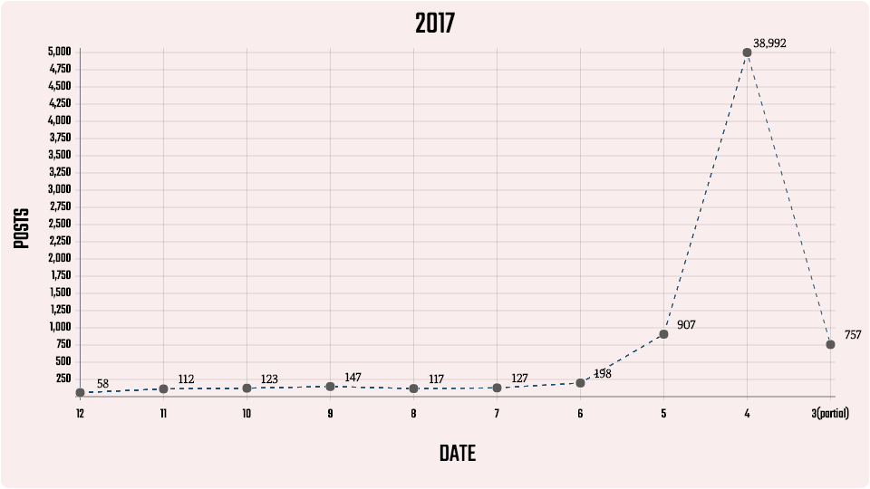

매년 봄마다 인기를 얻고 있는 벚꽃엔딩에 대한 사람들의 인식을 인스타그램을 통해 알아보고자 했다. 이를 위해 #벚꽃엔딩을 해시태그로 입력한 인스타그램 게시글을 크롤링해 분석했다. 2016년 3월 30일부터 2017년 12월 15일까지의 데이터를 대상으로 했다.
#벚꽃엔딩 포스트
16'먼저 벚꽃엔딩을 해시태그로 입력한 게시물의 수를 월별로 분석한 결과, 벚꽃엔딩 관련 게시물 또한 봄에 집중되어 있었다. 2016년과 2017년 모두 4월에 게시물의 수가 집중되어 있었으며, 5월에도 비교적 높게 나타났다. 3월 데이터는 수집을 하지 못했지만, 마찬가지로 높았을 것이다. 벚꽃엔딩에 대한 사람들의 관심이 봄에 주로 나타난다는 것을 다시 한번 확인할 수 있었다.
 17'워드클라우드
게시물의 내용을 통해 사람들이 벚꽃엔딩에 대해 가진 생각을 알아보고자 워드 클라우드(word cloud) 분석을 했다. ‘벚꽃엔딩’을 해시태그로 입력한 게시글에 함께 입력되어 있던 해시태그들을 기반으로 워드 클라우드를 그렸다. 봄만 되면 벚꽃엔딩이 순위 차트에 올라온다는 사실이 죽지 않는 좀비와 비슷하다는 점에서 만들어진 별명 ‘벚꽃 좀비’에 착안해 좀비 모양으로 워드 클라우드를 그렸다. 좀비 크기의 경우, ‘벚꽃엔딩’이 해시태그로 입력되어 있던 게시물의 수를 토대로 했다. 게시물의 수는 2016년 47150개, 2017년 41538개로, 큰 차이가 없었다.
Left 16' Right 17'워드 클라우드에 나타난 단어를 살펴보면, 가장 먼저 눈에 띄는 것은 ‘벚꽃’, ‘봄’, ‘봄노래’, ‘봄스타그램’ 등 봄과 관련된 다수의 단어다. 벚꽃엔딩에 대한 사람들의 생각은 역시 봄, 벚꽃과 가장 많이 연관된다는 것이다. 또한 ‘경주’, ‘온천천’, ‘축제’, ‘봄나들이’, ‘피크닉’ 등의 단어가 나타나는 점에서 벚꽃 엔딩이 벚꽃 관광 명소 혹은 봄 소풍 등과 관련된다는 점도 알 수 있다.
이 외에도 ‘10cm’, ‘로이킴’, ‘봄봄봄’, ‘봄이 좋냐’ 등의 태그가 함께 등장한다는 것에서 다른 봄노래와 벚꽃엔딩을 함께 연상하는 사람이 많다는 점이 드러난다. 벚꽃엔딩을 필두로 ‘봄 캐럴’이라는 새로운 장르가 생겨 2013년 로이킴의 ‘봄봄봄’, 2014년 아이유의 ‘봄 사랑 벚꽃 말고’, 2016년 10cm의 ‘봄이 좋냐??’ 등의 노래가 발매됐다는 점에서 더 주목할 만한 결과다. 특히 아이유의 봄 사랑 벚꽃 말고는 벚꽃엔딩과 마찬가지로 2017년까지 음악 차트 순위에 드는 등 매년 봄마다 사랑받고 있다.
이 외에도 ‘10cm’, ‘로이킴’, ‘봄봄봄’, ‘봄이 좋냐’ 등의 태그가 함께 등장한다는 것에서 다른 봄노래와 벚꽃엔딩을 함께 연상하는 사람이 많다는 점이 드러난다. 벚꽃엔딩을 필두로 ‘봄 캐럴’이라는 새로운 장르가 생겨 2013년 로이킴의 ‘봄봄봄’, 2014년 아이유의 ‘봄 사랑 벚꽃 말고’, 2016년 10cm의 ‘봄이 좋냐??’ 등의 노래가 발매됐다는 점에서 더 주목할 만한 결과다. 특히 아이유의 봄 사랑 벚꽃 말고는 벚꽃엔딩과 마찬가지로 2017년까지 음악 차트 순위에 드는 등 매년 봄마다 사랑받고 있다.
마지막으로 ‘벚꽃연금’, ‘좀비’, ‘매년’, ‘아직도’, ‘역시’, ‘순위에’ 등의 단어가 나타나는 것에서 벚꽃 엔딩이 계속해서 인기를 얻고 있는 상황에 대한 사람들의 인식을 알 수 있다.